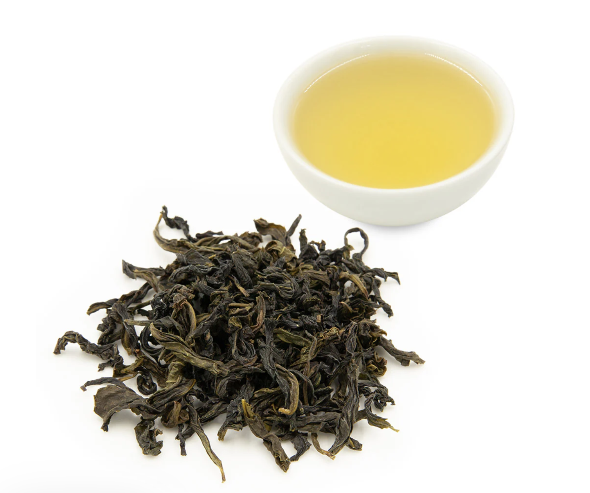

Bögglate (Wenshan Baozhong)
Hlustaðu á frásögnina:
Flestir þekkja grænt og svart te. Þetta te, sem heitir Wenshan Baozhong, er Wulong-te sem þýðir að það er í öðrum flokki sem mætti staðsetja á milli svarts og græns te.
Sögulega var það selt í umslögum eða bréfbögglum í Tævan og þaðan kemur heitið Baozhong sem er hokkien-framburður af mandarín orðinu 包裝 (baozhuang) sem þýðir bara "umbúðir." Mér fannst því við hæfi að kalla það "bögglate."
Það sem gerir Baozhong-te svo sérstakt er blómailmur sem minnir helst á liljur eða jasmínblóm. Engu bragðefni er bætt við; þessi dásamlegi ilmur kemur beint úr laufunum sjálfum vegna þess hvernig þau eru meðhöndluð. Baozhong-bragðið byggir á mikilli nákvæmnisvinnu við að rúlla og þurrka laufin þannig að bragðið ýtist upp á yfirborð laufanna og verði vatnsleysanlegt.
Þetta te er þekkt fyrir að vera „leikandi létt“ og silkimjúkt. Það skilur ekki eftir sig neina beiskju í munni, heldur ferskt og sætt eftirbragð sem endurspeglar hreina fjallaloftið í Wenshan-héraði í suðurhluta Taipei þar sem það er ræktað.
Hvernig á að njóta þess?
- Hitastig: Ekki nota sjóðandi vatn. Best er að láta það kólna niður í 85°C–90°C til að laða fram blómailminn.
- Tími: Gott er að láta teið standa í 2–3 mínútur.
- Margar uppáhellingar: Hægt er að hella upp á mörgum sinnum; bragðið opnast og breytist með hverjum bolla.